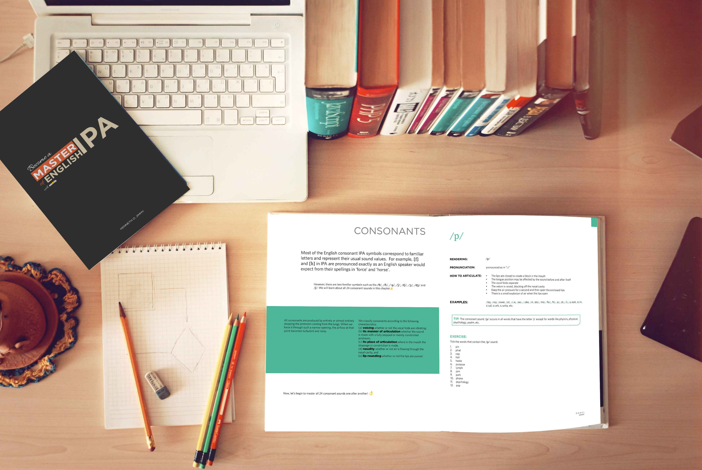

WHAT IS DICTION?
Diction is the effectiveness and degree of clarity of word choice and expression. It concerns pronunciation and tone. It can also be the act of speaking in a distinctive way.
Having a clear diction entails pronouncing your words correctly. For clear diction and pronunciation, we need to understand the concept and the difference of pronunciation and diction. This leads us to what pronunciation entails.
WHAT IS PRONUNCIATION?
Pronunciation is the way a word or a language is sounded. It may be referred to as the generally accepted sequences of sounds used in saying a given word or language in a specific dialect. It can be the way a particular individual speaks a word or language.
A word can be pronounced in different ways by various individuals or groups, depending on various factors such as location of their current residence, speech or voice disorders, ethnic group, social class and level of education.
No matter the factor affecting your pronunciation, you will surely speak correctly and sound better when you practice consistently the practical guidelines in this book. 😊
It is important we learn to pronounce words correctly because good pronunciation makes listeners understand the language you are speaking. Without proper pronunciation, listeners may not understand the speaker’s language or words. Pronunciation plays a key role in speaking.
For our pronunciation to be correct, we need to articulate words properly. Articulation* is the quality, clarity or sharpness of speech.
For a clear speech, we need to make use of our speech organs which are: mouth, lips, tongue, teeth etc. We also need to know our vowels and consonants because they play an important role in speech articulation.
\IMPORTANT ASPECTS OF PRONUNCIATION
For correct pronunciation, we need to take note of some things required to sound better.
WORD STRESS: This is the emphasis placed on certain syllables in a word. English is a stress-timed language. Therefore, to sound better, we need to stress some syllables in a word.
SENTENCE STRESS: This is the emphasis placed on certain words in a sentence.
LINKING: This is the joining of certain words in order to flow smoothly when pronouncing words.
INTONATION: It is the rise and fall of the voice when speaking.
In the subsequent chapters, we are going to learn more about those aspects of pronunciation.
You want to improve your pronunciation and speak like a Briton, don’t you? Well, speaking like a Briton and improving your pronunciation is possible if you are determined to do so. To that effect, you should follow the tips listed below:
- Learn the International Phonetic Alphabet (IPA). This will ensure that you not guess the pronunciation of words but, instead, always check your dictionary to confirm the correct pronunciation.🤓
- Listen carefully to others before you speak.👂
- Listen to yourself when speaking and correct your mistakes if possible. Be conscious of your pronunciation. Granted it will undermine fluency a bit, but the exercise is worth it.😉
- Watch British movies and pay attention to how they speak. You could also mimic them if that’s ok with you (I do that sometimes).😊
- Practice with tongue twisters.😛
- Check the movement of your mouth by using the mirror when making any sound (it’s quite awkward, believe me I have been there. But it’s worth a try).😆